Morrisite.org › Places › Deer Lodge Valley
Deer Lodge Valley
Powell and Deer Lodge counties, Montana. The longest-lived center of the movement, and the Lord’s House at Racetrack, the last Morrisite church standing.

The longest-lived center of the movement. The wood-frame Morrisite church, built in 1878–79, still stands on private land at Racetrack, about 8 miles south of Deer Lodge: on the north side of Dempsey Road, just west of the railroad and the Interstate 90 frontage road (Exit 195; about 46.29° N, 112.75° W; NE¼ sec. 8, T6N R9W, Powell County; until 1901 this was Deer Lodge County, the county named in older records and in this guide’s photograph captions). The county lists it as a frame building of 18 by 36 feet (Montana Cadastral, Montana State Library, consulted November 6, 2026). In the 1870s the council also met in members’ houses on Dempsey Creek, near the site: in December 1876 it set its next meeting for Peter Jansen’s place on Dempsey Creek (council minutes, December 3, 1876, Church History Library, MS 31876, item 41; translation from the Danish generated by Claude). It was last photographed for this guide in August 2020. Called the Lord’s House, as the panel over its doors reads, it was the church’s meeting place: George Thompson was elected president of the church there in 1886, and Andrew Hendrikson (1886–1921) and George Johnson (1921–1954) presided over the Montana church from it. It is the only Morrisite church building known to survive, and its condition has worsened markedly since 2009. See the condition record under Images.
The Deer Lodge paper, the New North-West, spoke well of its Morrisite neighbors. In June 1878 it reported that the post office at Gwendale, Deer Lodge County, had been renamed Morristown, and that “as many of the people are Morrisites” they would likely take to the name. In 1883 it called the settlements on Warm Springs Creek and the upper Deer Lodge River “largely composed” of Morrisites and praised them as industrious, hospitable and law-abiding; in 1885 it noted “a large number of Morrisites in this valley” (New North-West, June 7, 1878, p. 3; April 13, 1883, p. 2; October 30, 1885, p. 3; see Newspapers). The paper’s notices place Gwendale in the upper Deer Lodge valley, near Warm Springs and Lost Creek. It was school district No. 6; in April 1875 “the citizens of Upper Deer Lodge Valley” met at the Gwendale school house on the railroad question, with Morgan Evans in the chair and a W. Watkin Thomas on the resolutions committee; Gwendale primaries were held at Wier’s store; and a smelter there began work in August 1877 (New North-West, April 16, 1875, p. 2; June 18, 1875, p. 3; August 31, 1877, p. 3). Morgan Evans, whose land later became Anaconda, gave Gwendale as his address. By 1883 the same school district, No. 6, was called Willow Glen, with Peter Jessen, a Gwendale man since the 1870s, as a trustee and J. I. Eardley as clerk (New North-West, May 4, 1883, p. 3). In March 1880 the land office listed Warm Springs settlers whose homestead claims were held up while it decided whether the ground was mineral land; among them were Daniel James and William P. Thomas, on Warm Springs Creek east of where Anaconda was built (secs. 33 and 34, T5N R10W), and Morgan Evans and Peter Jessen, in sec. 9, T4N R10W, near today’s Opportunity (New North-West, April 30, 1880, p. 4); all four claims were patented as homesteads in 1880–81. In January 1882 the paper reported that John R. Eardley, formerly of San Francisco, had built a store at “Daniel James’ corner, Warm Springs settlement,” and that the neighborhood had petitioned for a post office there “to be called Willow Glen”; in March it reported his appointment as postmaster “at Willow Glen on Warm Spring creek, where the Gwendale postoffice formerly was” (New North-West, January 20, 1882, p. 3; March 10, 1882, p. 3). Gwendale, renamed Morristown in 1878, and Willow Glen were thus successive post offices for the same neighborhood, between Anaconda, Opportunity and Warm Springs. The exact site of the Gwendale school house is still not known.
View onlyThe church is privately owned, unsafe and not open to the public. View it from Dempsey Road or the frontage road; do not enter the property.
Places on the ground
Sites named in the sources, with how precisely each can be placed. Solid markers are located; outlined markers are approximate; squares are land patents, drawn at the quarter-section or section the patent names. Sites not yet located are listed without a marker. Most of these places are private land today. If you know where one of these places stood, please write.
“Willow Glen Ranch” near Opportunity, shown in gray, is the later company stock farm of that name (burned in 1963), not the Willow Glen of 1882.
- The Lord’s House, Racetrack Located 1878–1969 map
The church of the Montana Morrisites, built in 1878–79 and dedicated on August 9, 1879, on the north side of Dempsey Road just west of the railroad and the Interstate 90 frontage road (NE¼ sec. 8, T6N R9W, Powell County). George Thompson was elected president of the church here on May 10, 1886. It is the only Morrisite church building known to survive. Don Cornelius, who saw it in 1962, dated it to 1878 and described a building of planed lumber, once painted white, with “THE LORD’S HOUSE” lettered above its double doors, standing in a pasture; Julie A. Wright gives its dedication as 1879. Privately owned and unsafe: view it from the road only.
Sources: Montana Cadastral, Montana State Library, consulted November 6, 2026; Anderson, Revisited; Don Cornelius, “Mormonism in Montana, 1847–1898” (M.A. thesis, Montana State University [now the University of Montana], 1962), pp. 63–64; Julie A. Wright, “Mormon Movement to Montana” (M.A. thesis, University of Montana, 2004), p. 37. See the photographs under Images. - Homesteads and land entries, Racetrack to Deer Lodge Located 1871–1905
Federal land patents to Morrisite families cluster along the river between Racetrack and the town of Deer Lodge (T6N–T9N, R8W–R9W). The earliest is Niels R. Beck’s preemption entry, patented in 1871. On the map each patent is a square at the quarter-section or section it names: that locates the land, not the house. Most of it is privately owned today.- Niels R. Beck, 1871 (preemption, cash): SE¼ sec. 34, T8N R9W
- Lars C. Hansen, 1873 (agricultural college scrip): NE¼ sec. 34, T8N R9W
- Ole Olsen, 1876 (agricultural college scrip): NW¼ sec. 26, T8N R9W
- Lars Olsen, 1876, 1884 (scrip; cash): NW¼ sec. 27, T8N R9W
- William Richardson, 1876 (agricultural college scrip): NW¼ sec. 21, T7N R9W
- James Richardson, 1880 (agricultural college scrip): SW¼ sec. 16, T7N R9W
- Anders Hansen, 1883 (cash): NW¼ sec. 33, T9N R9W
- Eric Eliasson, 1888 (homestead): SW¼ sec. 4, T6N R9W
- Margaret Eliasson, 1888 (cash): SW¼ sec. 11, T7N R9W
- Lars C. Hansen, 1890 (cash, 634.84 acres): sec. 6, T7N R8W
- Anders Christofferson, 1891 (homestead): NE¼ sec. 28, T8N R9W
- Niels Hansen, 1896 (patent): NE¼ sec. 32, T9N R9W
Sources: Bureau of Land Management, General Land Office Records (glorecords.blm.gov); section lines from the BLM National PLSS dataset. - Willow Glen: the post office and the old log church Approximate 1882 (the church earlier) map
Eliza Eardley Hardin remembered that in August 1881 her family, from California, built a log store at a crossroads where the road to Philipsburg left the Butte stage road, named it Willow Glen, and had it made a post office. The Deer Lodge paper dates the store to January 1882, when John R. Eardley, formerly of San Francisco, had built it at “Daniel James’ corner, Warm Springs settlement” and neighbors had petitioned for a post office there, and his appointment as postmaster to March 1882, “at Willow Glen on Warm Spring creek, where the Gwendale postoffice formerly was.” Daniel James held two tracts in section 33, T5N R10W: the SW¼, his homestead (patented 1880; see Gwendale, below), and the E½ NW¼ (patented 1872). Hardin also remembered “an old log church and a large fenced yard” near the crossroads, and next to it the home of William James, the Morrisites’ local president. The paper’s list of paid subscriptions in September 1886 names “Daniel James, Sr.” and “Wm. M. James,” both of Willow Glen; whether they were related is not known. The church was very probably the Willow Glen Meeting House on Warm Springs Creek where the church court met on May 10, 1882, and sustained James as president. In September and October 1896 Latter-day Saint missionaries met the Morrisites at Willow Glen; they found them well read in scripture, and “Apostle Eardly” thanked the elders for their visit (Butte District manuscript history, Church History Library, as summarized by Wright). The marker is at the center of section 33, a corner of both of James’s tracts; which corner the paper meant is not known. The federal gazetteer puts the post office about a mile farther north. The church has not been located exactly.
Sources: Eliza Eardley Hardin, reminiscence, undated (received 1952), Eliza Eardley Hardin Reminiscence, SC 788, Montana Historical Society Library & Archives, Helena, Montana; New North-West, January 20, 1882, p. 3, March 10, 1882, p. 3, and September 3, 1886, p. 3; Julie A. Wright, “Mormon Movement to Montana” (M.A. thesis, University of Montana, 2004), p. 35; U.S. Geographic Names Information System, “Willowglen Post Office (historical)”; Anderson, Revisited. - Gwendale (renamed Morristown in 1878) Approximate 1874–1878 map
A settlement and post office of the upper valley with its own school house (school district No. 6), store and, from 1877, a smelter. The Deer Lodge paper reported in June 1878 that the post office had been renamed Morristown, adding that many of the people were Morrisites. In March 1880 the land office named four Warm Springs settlers whose homestead claims were held up until it decided whether the ground was mineral land: Morgan Evans and Peter Jessen, both of Gwendale, in section 9, T4N R10W, near today’s Opportunity, and Daniel James and William P. Thomas about two miles to the north, in sections 33 and 34, T5N R10W. All four claims were patented as homesteads in 1880–81; they are the squares around this marker. Of the four, only W. P. Thomas is linked to the Morrisites (probably); Jessen is not on the roll, and no Morrisite link has been found for Evans or James. The marker sits among the claims and shows the neighborhood. In 1882 the Willow Glen post office was opened “where the Gwendale postoffice formerly was,” at Daniel James’s corner (see Willow Glen, above), but which corner is not known. By 1883 the school district was called Willow Glen.- Morgan Evans, 1881 (homestead, 160 acres): W½ SE¼, NE¼ SW¼ and SE¼ NW¼ sec. 9, T4N R10W
- Peter Jessen, 1881 (homestead, 160 acres): NE¼ sec. 9, T4N R10W
- Daniel James, 1880 (homestead, 160 acres): SW¼ sec. 33, T5N R10W
- William P. Thomas, 1880 (homestead, 160 acres): N½ SE¼ sec. 33 and N½ SW¼ sec. 34, T5N R10W
Sources: New North-West, April 16, 1875, p. 2; June 7, 1878, p. 3; April 30, 1880, p. 4; May 4, 1883, p. 3; Bureau of Land Management, General Land Office Records (glorecords.blm.gov) (Evans, accession STA-MT0220__.312; Jessen, STA-MT0220__.362; James, STA-MT0220__.198; Thomas, STA-MT0220__.277); section lines from the BLM National PLSS dataset. See Newspapers. - William Price Thomas on Warm Springs Creek Approximate 1863 map
A local history names William Price Thomas, a Welshman and confidant of George Williams, among the first Morrisites in the valley, settling in 1863 on Warm Springs Creek about three miles east of where Anaconda would be built. His sons John, Evan, Frank and Daniel later homesteaded nearby. The marker follows that description only. A William P. Thomas received a homestead patent in 1880 for land in sections 33 and 34, T5N R10W, about four and a half miles east of the center of Anaconda (see Gwendale, above); that he is William Price Thomas is likely but not proved.
Sources: Patrick F. Morris, Anaconda, Montana (1997), p. 15; Bureau of Land Management, General Land Office Records (glorecords.blm.gov), accession STA-MT0220__.277. - The upper-valley congregation “near Lost Creek” Not yet located 1870s–1880s
The church in Montana was organized as two stakes in 1874. Morris places one congregation “in the upper valley near Lost Creek” and the other near Deer Lodge by Race Track Creek, each with a meeting house and a school. Lost Creek runs east past Galen to the Clark Fork, a few miles north of Willow Glen, so the upper-valley meeting house may be the Willow Glen church; this has not been confirmed. Henry Hendrickson, born in the valley in 1877, likewise remembered a second church besides the one at Race Track, “up around Lost Creek” near Anaconda. Cornelius, drawing on his 1962 interviews, says the Lost Creek church was built in 1872, soon after the group arrived.
Sources: Patrick F. Morris, Anaconda, Montana (1997), p. 16; Anderson, Revisited; Henry Hendrickson, interview by Don Cornelius, April 19, 1962, p. 2, OH 018-001, University of Montana (see Repositories); Don Cornelius, “Mormonism in Montana, 1847–1898” (M.A. thesis, Montana State University [now the University of Montana], 1962), p. 63. - Gregson Hot Springs (now Fairmont) Approximate 1860s? map
An Anaconda historian, interviewed in 1989, said the first Morrisites stayed at the hot springs later named Gregson “a winter or two” before homesteading in the valley. No earlier source for this has been found. Morris says Ben Phillips built the first house there and that Eli and George Gregson came in 1869.
Sources: Montana Standard, July 2, 1989, p. 69; Morris, Anaconda, Montana, p. 15. Unconfirmed.
In the chronology
- 1860s–Some Morrisites return to the Church of Jesus Christ of Latter-day Saints, in Utah and elsewhere. The 2006 monument at South Weber notes that a few were rebaptized and remained there. Others find a home in the Reorganized Church (RLDS): the former Morrisite apostle Mark Hill Forscutt joins it in Salt Lake City in 1865, and John L. Bear (Johann Lebrecht Bär, 1838–1919), a Swiss convert from Affoltern am Albis who emigrated from Zürich in 1860 and lost his wife and child at Kington Fort, later serves as an RLDS missionary to Switzerland and Germany, dies in Independence, Missouri, and publishes his autobiography in the RLDS Journal of History. In 1865 RLDS missionaries at Malad, Idaho, baptize several people who appear on the roll. Others join only after years in the Morrisite groups: Erick and Caroline Eliason are baptized together at Soda Springs on June 9, 1870; Margaretta Cook leaves the Morrisites in Nevada in 1870 and is baptized RLDS in 1873; and Lena Hanson, at Soda Springs and then Deer Lodge, in 1895 (see the roll).
- 1865–66Morrisites are meeting in the Deer Lodge Valley, Montana. On March 4, 1866, Sven Olson Hagg writes from Deer Lodge City that he has spent the winter with L. C. Larsen and his family, and helped Larsen build a new house “hvori vi nu holder forsamlinger” (“in which we now hold meetings”). God has begun “to pour out the power of his Spirit upon some of his children right here in Deer Lodge Valley, where the beginning (of the Kingdom) shall be founded.” The first to receive it, he says, was “his servant William D.”, president of the Aaronic priesthood, standing “in Abel’s place” by birthright. This was William W. Davies, whose community later dated its era from January 24, 1866. Hagg also notes that Williams, in an epistle of August 26, 1865, had told J. P. Lorentzen, S. P. Guhl and George Thompson to winter in the valley (Hagg to A. Hanssen, March 4, 1866, Church History Library, MS 31876, folder 22; translation from the Danish generated by Claude).
- 1868From Salt Lake City George Williams writes to “Bro. James & Saints of the Most High in Montana” (December 14, 1868): William James’s group is already in Montana and uses the name later borne by the Montana church. Williams wishes to visit “my beloved brethren & sisters in Montana” but says he is “called to travel to the States & Europe” (Church History Library, MS 31876).
- 1869George Williams leaves Utah for England, passing through Omaha from January 18 to February 5, where the Council Bluffs and Omaha congregations are organized on his authority (see Omaha & Council Bluffs under Places); a year later he writes from Loughborough that it was “now one year since I left the continent of America”; his wife and children stay in Salt Lake City, and he asks the Montana members to send help for “my little ones” (Williams to the Saints of the Most High in Montana, January 10 [?], 1870, Church History Library, MS 31876). By June he is at Ashwicken, near King’s Lynn, Norfolk, writing to the Saints at Omaha and Council Bluffs, where Rasmus Rasmussen is “the presiding Bishop.” George Thompson is with him at Ashwicken that summer, and William P. Thomas and a Brother James come to England too: Thompson writes on July 29, 1869, to “Beloved Brethren W. P. and D. J.,” one at Llanybyther in Wales and the other at Derby. The Omaha minutebook names him: on June 2, 1869, Guhl left for Denmark with “2 Welsh brethren, William P. Thomas, a High Priest, and an Aaronic Priest Daniel James,” called “to go to Wales on mission.” In March 1870 Williams writes that “Bro Thomas & Bro James,” having “attended the heavenly call,” are “now permitted to return to their families in Montana” by way of Omaha. In September 1870 he gives his own account of Almerin Grow, who had walked from California to Salt Lake on hearing of him, was told of “his mission to the Sultan & Priesthood of Mahommet,” and was later “sent to Constantinople & Jerusalem,” returning “without my consent” (Williams to the Omaha church and to Andrew Hendrikson, 1869–70; George Thompson to William P. Thomas, 1869; and the Omaha minutebook, 1869–1871, MS 31876). Danish-language congregations keep membership and account books in Omaha, Nebraska, and Council Bluffs, Iowa.
- 1870sMany members regather in the Deer Lodge Valley, Montana, under George Williams, the “Prophet Cainan,” who claims to be Morris's successor. In July 1874 the Montana church is divided into two stakes: Stake No. 1 on Warm Spring Creek, which met at a meeting house at Willow Glen under William James, and Stake No. 2 at Race Track under Andrew Hendrikson (Church History Library, MS 32226; see Repositories). Stake No. 2’s own minutes record its founding general meeting on July 12, 1874. Hendrikson spoke to “the brothers and sisters who had chosen to be under his presidency”: they lived in two places, Warm Spring and Deer Lodge, about equally many in each, and Jens Jensen was appointed to preside over the meetings at Deer Lodge. From then on only members of “our organization” were to sit in its councils, not those of “the other organization” (general meeting, July 12, 1874, MS 31876; translation from the Danish generated by Claude). Hendrikson was living at Race Track by February 1878. A local history of Anaconda dates the first Morrisite settlers in the valley to 1863, among them William Price Thomas on Warm Springs Creek, east of the later townsite; has a group under William James arriving in 1867 as others left; and describes a caravan of thirteen covered wagons that came in June 1871, part of a larger migration from Iowa, Nebraska, Utah and Idaho: Scandinavian families, mostly Danes, with English, Scottish and Welsh believers. It places the two congregations in the upper valley near Lost Creek and near Race Track Creek, with about eighty members in all (Patrick F. Morris, Anaconda, Montana, 1997, pp. 15–17). Williams’s letters from England direct the move from Omaha: in September 1871 “Bro Merrick” sets out for Montana “with his cattle,” in the spring of 1872 Williams sends “instructions for gathering up to Montana,” and by December 1872 Andrew Hendrikson’s mail goes to the Warm Spring Creek post office (Williams to Hendrikson and the Omaha church, 1871–72, MS 31876). Not everyone left Nebraska at once. A branch at Fremont met in Andrew Peterson’s house in November 1871, and in March 1873 Peterson wrote to Hendrikson that the Fremont members hoped to come to Montana that summer and were trying to sell their place (MS 31876, folders 37–38). Williams himself was in England, living by 1876 in George Thompson’s house at Walthamstow, Essex: “I am now writing in Bro Thompson’s house where I have been tarrying some weeks” (to William James, July 13, 1876, Church History Library, MS 31876).
- 1873The Montana council minutes, kept in English this year, show the church at Warm Springs while its leaders are away. William James is on “his Mission in Nevada.” Williams calls William P. Thomas “on a Mission to Salt Lake,” and he appoints Andrew Hendrikson by letter “to take the Presidency, assisted by the Bishop and his Counselors,” while both are absent (May 5, 1873). In March a committee of four tries a quarrel between Thomas and Daniel James over the line between their lands and Daniel James’s cattle, set on by dogs as they passed Thomas’s place. It tells the two to forgive each other, but Thomas rejects the ruling as “Develish talke.” In July, Damander, who had hosted the Council Bluffs councils, turns against Williams, saying “Cainan was a Man like Brigham Young to lead the People astray.” James takes back the presidency on July 20. In September the council meets privately at Rasmus Rasmussen’s house to keep Thomas out and agrees to report him to Williams; Thomas, Williams’s appointed first counselor and “our second man in authority,” is to be left alone until Williams answers. In December the sisters in the town of Deer Lodge complain that Margaret Thomas did not invite them to the sisters’ feast at Warm Springs (council minutes, March–December 1873 and January 12, 1874, Church History Library, MS 31876). In California the same year, George Dove, who with his father James had followed Williams and then Davies, begins receiving communications and organizes a Church of the Firstborn of about thirty people (Watson, p. 198).
- 1876The Danish council minutes for the year show the Montana church meeting monthly in members’ houses at Warm Springs, Deer Lodge and Dempsey Creek, with Andrew Hendrikson presiding and Jens Jensen reading the minutes. Williams has sent William James away on a mission and directed that Daniel James look after James’s stake. When James returns in August with a letter from Williams, he reads Williams’s word “convenient” to mean that he should preside over the members at Warm Springs and Hendrikson over those at Deer Lodge; the council holds that the two stakes must stay as they are until Williams sends further instructions. In November a letter from Williams asks Hendrikson to call together the brethren “of both priesthoods” to propose a form of government with officers; the council proposes no change. In December it excludes Peter Nelsen, who said he had no faith in Cainan’s mission, from “Jesu Christi Kirke af den Høiestes Hellige,” the Church of Jesus Christ of the Most High Saints (council minutes, January–December 1876, Church History Library, MS 31876, item 41; translation from the Danish generated by Claude).
- 1878–79Montana Morrisites build a wood-frame church, the Lord’s House, a mile or so below Racetrack, south of Deer Lodge. About 1877 Williams wrote from England that he was glad the church “is to have a House and the workmen all in the covenant” (MS 31876, folder 8), but the site was settled only on February 24, 1878. That day a joint council of both stakes met in Andrew Hendrikson’s house at Race Track, with William James presiding. Some wanted the house on Warm Spring Creek or on Peder Jansen’s land, and Rasmus Rasmussen cited “Cainan’s letter that it was to be build on Land of some faithful Brother.” By ten votes to five the council chose “H. Land,” Hendrikson’s land (council minutes, February 24, 1878). Peder Jansen superintended the building (“havde forestaaet Bygningen”). In July 1879 the Race Track council moved its public Sunday meetings into the Lord’s House at 10:30 a.m., with the brethren to sit on the right and the sisters on the left (council minutes, July 24, 1879). The House was dedicated on August 9, 1879: in July 1882 the council planned to celebrate August 9, “som var 3de Aarsdagen siden at Herrens Huus blev indviet” (“which was the third anniversary of the dedication of the Lord’s House”; council minutes, July 29, 1882). The first council minuted “i Herrens Huus” met on September 27, 1879. A special council for both stakes on October 25, 1879, found that the brothers and sisters had given $634.70 in cash, with $76.73 still owing, to be paid by November 10 (council minutes, 1878–82, Church History Library, MS 31876; translation from the Danish generated by Claude).
- 6 Jan 1879Writing from Walthamstow to William James and the “Saints of the Most High in Stake No. 1 on the Sides of the North in Montana,” George Williams says that the region where they live is “the Sides of the North” (Psalm 48:2), where “the City of the great King” will come down before the Lord’s coming: “you are the pioneers.” He sets no date. The same letter calls the Lord’s House, then building, “my first House of Prayer on the Sides of the North” (Andrew Hendrickson’s copy of 1883, letters from Cainan to Montana followers, 1878–1881, MS 31876, Church History Library). See Teachings.
- 1880–81The Race Track council meets in the Lord’s House. In March 1880 word comes through Rasmus Rasmussen that a son of Williams has died and that Williams hopes to send his family to Montana; the council votes to help them when they come. On May 10 a joint meeting appoints August 9, the anniversary of the dedication, as “a Social Meeting in the Lords House (Conference),” and William James, robed, administers the sacrament and looks for the coming of Christ in 1891 (see Teachings). In September 1881 Hendrikson reads the council “an Epistle from Cainan which George Thompson had written,” and in November members object that John R. Eardley has preached against brandy and tobacco in a public meeting; Hendrikson says Eardley has “gone to extremes” (minutes, 1880–81, Church History Library, MS 31876, items 45–46; translation from the Danish generated by Claude, except the meeting of May 10, 1880, which is in English).
- 1882–83Williams dies in England on April 25, 1882, “being in his 68 year,” after about two years of great pain from “an enlargement of the bone” in his shoulder joint; George Thompson, who had done his writing for him, still knew of no one “appointed to fill his place” in August 1883 (Thompson to William P. Thomas, August 9, 1883, MS 31876). The movement splits among rival successors. In Montana, where the church is known as the Church of Jesus Christ of Saints of the Most High, Williams had directed that William James, its local president, be put before the church a year after his death: “Let the organisation remain as it is, for twelve months after my decease, then let brother James be placed before the whole Church when assembled at the years end, and if sustained by uplifted hand, there let him remain, and so on, from year to year” (Williams to the Montana brethren, January 29, 1882, Church History Library, MS 31876). An envelope he addressed to James, postmarked at New York on March 26, bears the words “I leave you in charge after my decease.” In his last weeks George Thompson, who lived near him in Walthamstow, answered the Montana church’s questions for him: on March 23, 1882, he wrote that “Bro Cainan is no better but gradually getting weaker & weaker,” and that if Williams named no one to replace a Sister Rasmussen in her office, the church should choose someone “and we will confirm your choice” (MS 31876). On April 25, 1883, a general assembly in the Lord’s House sustains James by 19 votes to 10, and he chooses Andrew Hendrikson and John R. Eardley as counselors. Several of the minority, among them Erick Eliason and Lars Beck, refuse to accept the vote, and the Race Track bishop, Rasmus Rasmussen, who will not sustain James, keeps the church’s records and is suspended (Church History Library, MS 32226; see Repositories). (Eardley, later a stake president, leaves Montana about 1900.) In the Danish-speaking stake at Race Track, the council minutes record the other side of the vote: in December 1882 Andrew Hendrikson read Williams’s last instructions that, if no new servant of the Lord came before the anniversary, the church might “selv … vælge en Leder for Kirken” (“itself choose a leader for the church”); in February 1883 he said that since “Cainan havde recommenderet Wm. James” he would uphold him, while Lars Beck said he could not see that choosing a president would do them any good (Race Track council minutes, December 30, 1882, and February 24, 1883, MS 31876; translation from the Danish generated by Claude). George Dove leads the California congregation.
- 1884A later claimant. James Brighouse, breaking from the RLDS Church, organizes the Order of Enoch in Independence, Missouri, a small commune with Lars Peterson whose main tenet is celibacy. After breaking with the Petersons and returning to Utah he proclaims himself the embodiment of the Second Coming and the “One Mighty and Strong,” and only then, as far as Kirk Watson can tell, teaches reincarnation. Brighouse had been brought into the RLDS Church in 1880 by the former Morrisite apostle Mark Hill Forscutt (see 1880), but Forscutt opposed the doctrine, calling it Morris’s “strange theory of repeated embodiment” (“Sketch of Joseph Morris,” CHL MS 702, p. 12). Watson, who has researched Brighouse, has found no connection between him and the Morrisites beyond shared ideas and language, and notes that the two men meant different things by the “seventh angel”: for Morris a stage in the soul’s ascent through the angelic ranks, for Brighouse a figure taken from Revelation 11. Watson also points out that the title was in Latter-day Saint use before either man took it up. The 1832 revelation now Doctrine and Covenants 88:112 speaks of “Michael, the seventh angel, even the archangel,” and in his funeral sermon for Joseph and Hyrum Smith in 1844, W. W. Phelps cast Joseph as the angel who would pour out the “vials of wrath,” an allusion to the seventh angel of Revelation 16; Latter-day Saints of the time often saw their prophet as the Seventh Angel (Kirk Watson, correspondence with the editor, November 2026, following Christopher James Blythe, “‘Would to God, Brethren, I Could Tell You Who I Am!’” Nova Religio 18, no. 2 (2014): 18–19; Phelps’s sermon as reconstructed in 1855, in Van Wagoner and Walker, “The Joseph/Hyrum Smith Funeral Sermon,” BYU Studies 23, no. 1 (1983): 15–16). One online account (Lost Mormonism) says the Order honored Morris as a prophet and martyr, but the standard references do not: Shields’s entry on the Order (Divergent Paths, 5th ed., §5.4) and Kraut’s note on Brighouse both omit Morris. Wikipedia describes the Order as the one Morrisite-related body that survived 1969; its later activity has not been confirmed for this guide.
- 1886At the yearly general assembly in the Lord’s House at Race Track, Montana, on April 25, George Thompson of London is elected president of the church; William James, who had claimed the presidency for life “by birthright,” resting on Williams’s envelope “I leave you in charge,” stays away. Eleven members who decline to sustain Thompson are given thirty days to do so. At a court meeting on May 10 James is suspended “for the crimes of usurpation of authority, and heresy,” and John R. Eardley is put over the Warm Spring Creek stake (Church History Library, MS 32226; see Repositories). That December Thompson was living in England, writing to the Montana brethren from Thornwood Common, Epping, Essex (MS 31876). Thompson is probably the last general president. Andrew Hendrikson, a Danish immigrant who was never a Latter-day Saint, presides over the Montana Morrisites from 1886 until his death on July 3, 1921.
- 1921–1954George Johnson, Hendrikson’s associate of more than fifty years and likewise never a Latter-day Saint, presides at the Lord’s House until shortly before his death on April 29, 1954, at ninety-eight. Anderson calls him the last official Morrisite leader: by the 1940s fewer than a dozen members were active, and with Johnson’s death the church came to an end and the Lord’s House was boarded up (Revisited, pp. 212, 214). His funeral was conducted by an Episcopal priest, and the local paper called the Morrisite church “almost extinct these days” (Silver State Post, May 7, 1954, p. 7; see Newspapers).
- 1969Surviving Morrisites, all of the second or third generation, gather at the Lord’s House on August 9, the anniversary of its dedication and one of the church’s two feast days; by then, Anderson writes, the gatherings were more social than religious (Revisited, p. 218). Utah State University’s finding aid for the Morrisite collection says the Church of Jesus Christ of Saints of the Most High officially disbanded in 1969, and the description of Anderson’s papers says meetings were held irregularly until then; Anderson himself dates the end to 1954. See How and when did the Montana church end? Its records, its descendants, and the Racetrack church remain.
- 1990A later claimant. Neal Chase, interpreter for Leland Jensen’s Missoula-based sect, the Bahá’ís Under the Provisions of the Covenant, publishes Ezekiel’s Temple in Montana. Drawing on Anderson’s book, he cites George Williams’s prophecy that Christ would come in the Deer Lodge Valley, identifies the Montana State Prison at Deer Lodge (where Jensen was held from 1969) as Ezekiel’s temple, and dates the fulfillment to August 9, 1969, Jensen’s first full day in prison. Jensen already taught that the prison was Ezekiel’s temple; his followers say they first learned of the Morrisites and Williams on a trip to Deer Lodge in 1990. Anderson finds that the book attributes far more prophetic ability to Williams than he had, and that there is no substantive proof the 1969 gathering anticipated the Second Advent (Revisited, pp. 216–18). The sect was not Morrisite in origin; it adopted Morrisite prophecies as confirmation of its leader’s mission.
- July 2012Descendants of Morrisite families hold a reunion in Deer Lodge; the property owners allow them to visit the Racetrack church.
- 2026Kirk Watson publishes The Morrisites: Writings and Revelations, collecting writings of Morris, Williams, Davies, and the Doves. The Racetrack church still stands, in declining condition (see the condition record under Images).
Photographs (61)
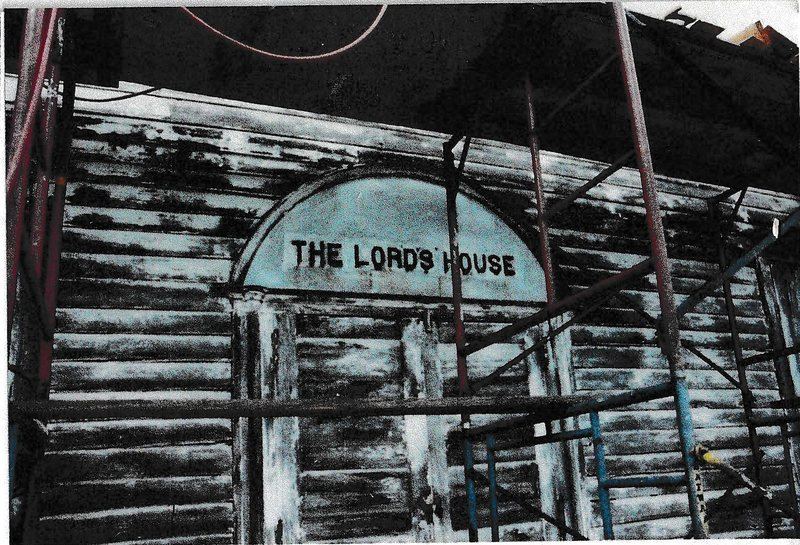
MO-IMG-063 The front of the church, with the arched panel lettered THE LORD’S HOUSE above…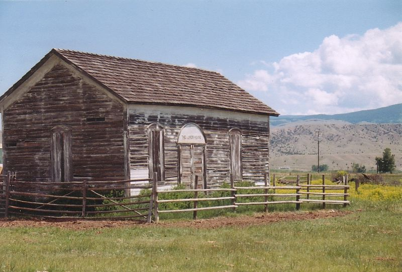
MO-IMG-025 The church in summer, front and gable end. Deer Lodge County, Montana · before…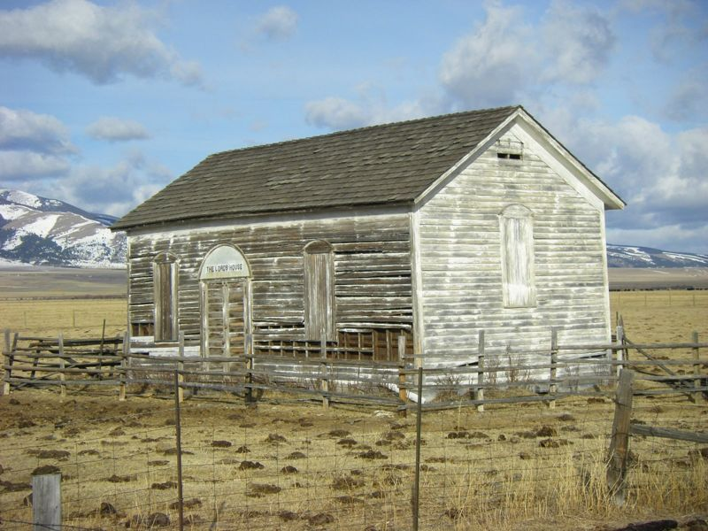
MO-IMG-002 The Morrisite church near Racetrack, with the mountains of the Deer Lodge…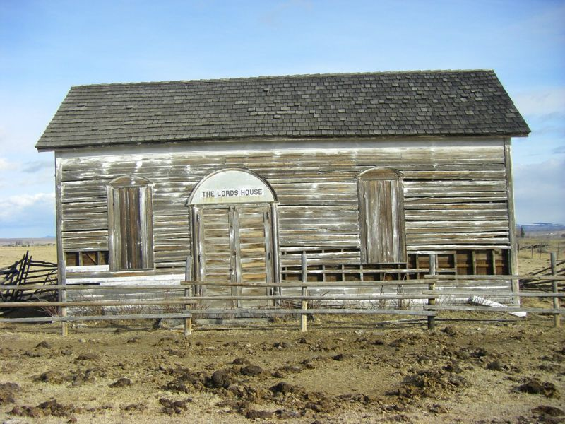
MO-IMG-003 Front of the church: double doors under an arched panel reading “The Lord’s…”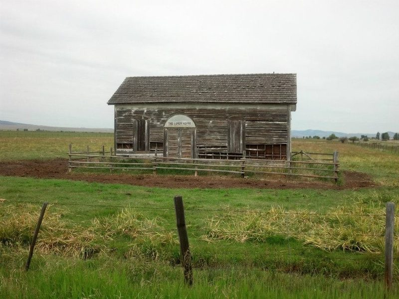
MO-IMG-019 Front of the church in summer. Compare MO-IMG-003 and MO-IMG-011. Deer Lodge…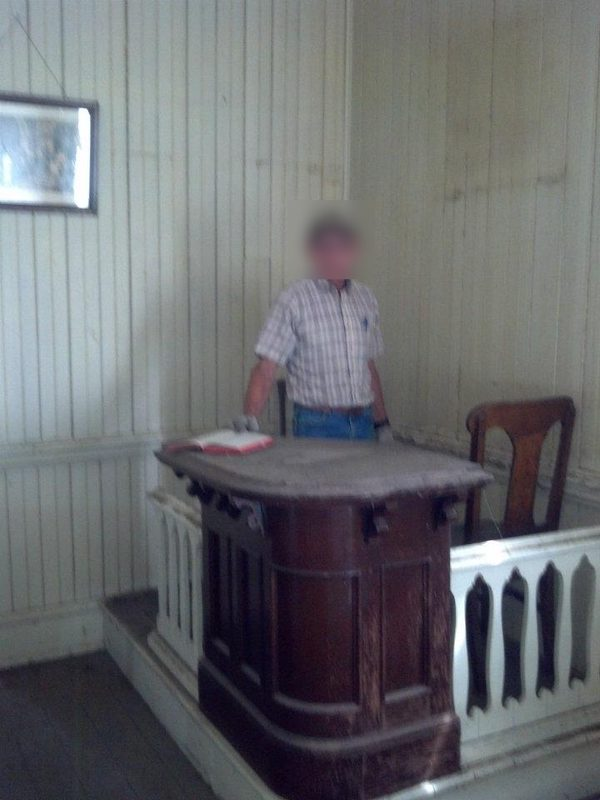
MO-IMG-020 Interior: the pulpit on its raised platform, the railing, a chair, and painted…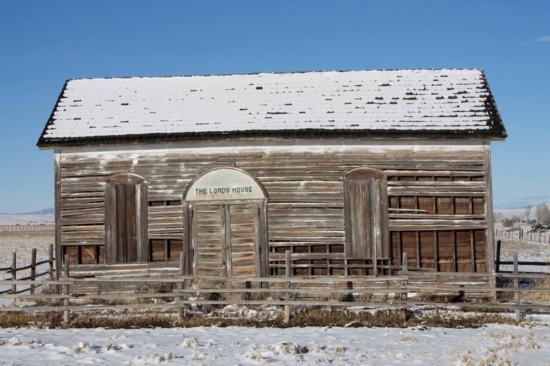
MO-IMG-011 Front of the church. Compare MO-IMG-003. Deer Lodge County, Montana · November…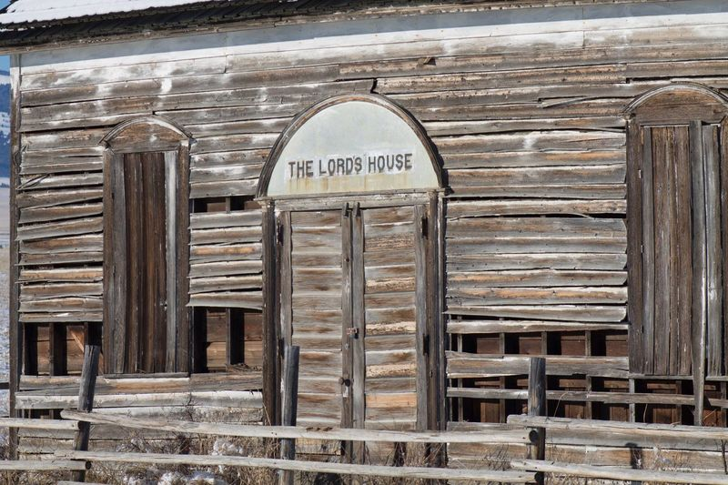
MO-IMG-012 Doors and lettered panel, with loose and missing siding on either side.…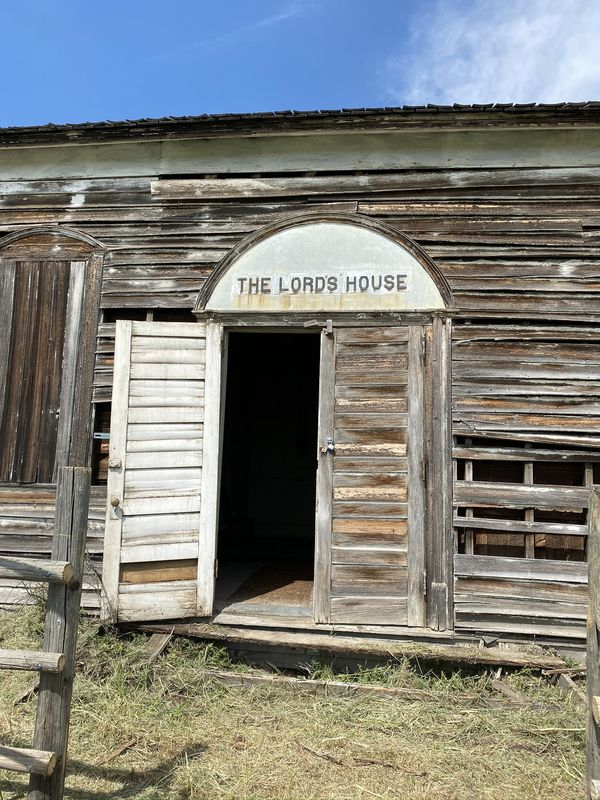
MO-IMG-083 The entrance under the lettered panel, one door open. Compare MO-IMG-012…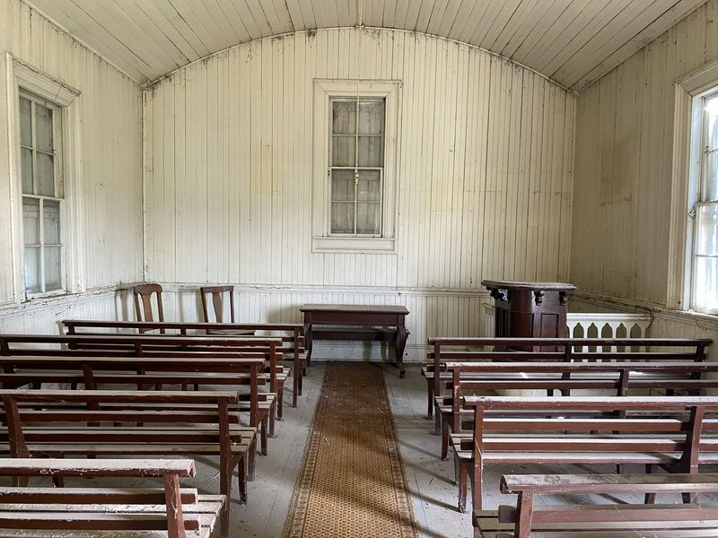
MO-IMG-084 Interior from the back toward the pulpit end. Compare MO-IMG-064 (1989). Deer…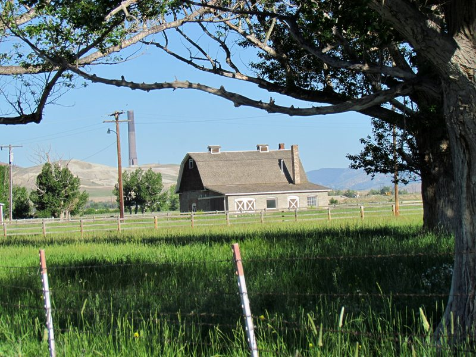
MO-IMG-093 The barn across the pasture, with the Anaconda smelter stack beyond. Deer…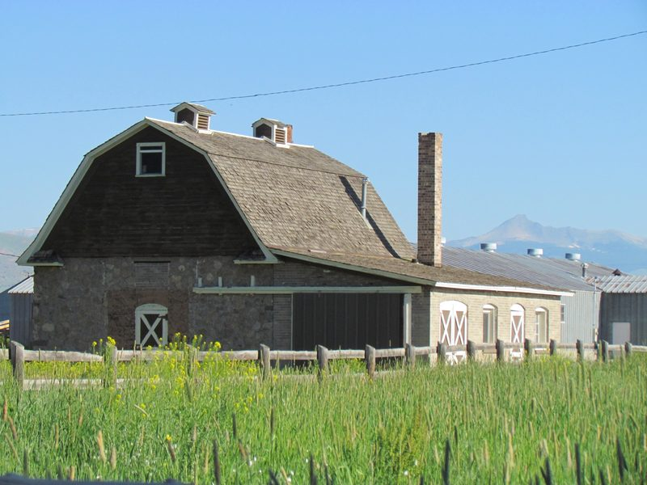
MO-IMG-094 The barn: stone lower story, shingled gambrel roof and brick chimney. Deer…Records, documents and questions
- Repositories Willow Glen photographs
- Repositories Eliza Eardley Hardin reminiscence
- Repositories Montana Homesteading Project records: the Eliason form
- Repositories Deer Lodge, Montana genealogy papers, 1860–1990
- Repositories Henry Hendrickson interview, April 19, 1962
- Repositories Diaries, letters, and federal records
- Repositories Church of the Firstborn (Morrisites) records, 1864–1901
- Questions Who were the Morrisites?
- Questions Was Lot Smith at the siege?
- Questions Who led the Montana church after George Williams?
- Questions How and when did the Montana church end?
- Questions Is there a line from Morrisite teaching to Chad Daybell’s?
- Questions Did the Prophet Cainan read birthrights by phrenology?
- Questions How did believers survive failed prophecy?
- Questions How did a prophet’s movement become a church run by vote?
- Questions Why were so many Morrisites Scandinavian?
- Questions What became of the spiritual gifts?
- Questions How has the Morrisite story been passed down, and where do the common errors come from?
- Questions Why did some Morrisites join the RLDS Church?
- Questions How did Latter-day Saints, the Reorganized Church and the Morrisites live alongside one another in the Deer Lodge Valley?
- Questions Where did the Copper Village organ come from?
- Questions Was Gwendale named for Gwenllian Evans?
- Questions Were the Evans and Thomas families of Gwendale connected to the Morrisites?
In the bibliography (16)
- The Montana church ending with George Williams, or with no leaders after him. It was led by William James, George Thompson (from 1886), Andrew Hendrikson (1886–1921) and George Johnson (1921–1954), until his death in 1954, with which, by Anderson’s account, the church came to an end (Revisited, pp. 212, 214); USU’s finding aid gives 1969 for its formal disbanding. See How and when did the Montana church end? John R. Eardley, called an apostle in 1861, was still called “Apostle Eardly” by Latter-day Saint missionaries in 1896.
- The Lord’s House built in 1877. The council minutes show that the site on Andrew Hendrikson’s land at Race Track was chosen only on February 24, 1878; the House was built in 1878–79 and dedicated on August 9, 1879 (Church History Library, MS 31876). This guide gave 1877 until November 2026. See Lord’s House.
- Williams naming Deer Lodge County as the site of the Second Coming. His letter of January 6, 1879, names the region where the Montana Saints lived, “the Sides of the North,” and sets no date. The reading of the Montana State Prison at Deer Lodge as Ezekiel’s temple is not Williams’s or the Morrisites’: it was Leland Jensen’s, and his Missoula sect tied it to Williams’s letter only after reading Anderson’s history, in 1990 (Anderson, Revisited, pp. 216–18). See Teachings.
- Chase, Neal. Ezekiel's Temple in Montana. Self-published, 1990.
- Anderson, C. LeRoy. “The Scattered Morrisites.” Montana: The Magazine of Western History 26, no. 4 (Autumn 1976): 52–69.
- Anderson, C. LeRoy, and Larry J. Halford. “The Mormons and the Morrisite War.” Montana: The Magazine of Western History 24, no. 4 (Autumn 1974): 42–53.
- Cornelius, D. E. “Mormonism in Montana, 1847–1898.” Master’s thesis, Montana State University (now the University of Montana), 1962. Chapter 6, “Mormon Schismatics in Montana” (pp. 56–66), treats the Reorganized Church in Montana from 1868 and the Deer Lodge Valley Morrisites, drawing on his 1962 interviews with Henry Hendrickson and Agnes Staffanson and on Reorganized Church records. It dates the Lost Creek church to 1872 and the Race Track church to 1878, and describes the Lord’s House as it stood in 1962. Its account of the Utah years is secondhand and calls Kington Fort “Knight Fort.” His interview with Henry Hendrickson is listed under Repositories. Online
- Halford, Larry Joseph. “Mormons and Morrisites: A Study in the Sociology of Conflict.” PhD diss., University of Montana, 1972. Directed by C. LeRoy Anderson. Record (campus access only)
- Wright, Julie A. “Mormon Movement to Montana.” Master’s thesis, University of Montana, 2004. Pages 33–38 treat the Montana Morrisites and the RLDS. Drawing on the Butte District manuscript history of the Northwestern States Mission (Church History Library), it reports Latter-day Saint missionaries’ visits to the Morrisites at Willow Glen in 1896 and at Racetrack about a year later. It also summarizes a family history of Niels R. Beck (see his page). Its brief account of 1862 places the siege at Manti; it took place at Kington Fort on the Weber River. Online
- Deer Lodge County History Group. In the Shadow of Mount Haggin. A Bicentennial “Heritage” project, 1975; the cover reads Under the Shadow of Mt. Haggin. Family histories of the upper Deer Lodge Valley. The Morgan Evans family (pp. 134–137), from the notes of Katherine Evans Wellcome, has Ann Evans coming to the valley in 1865 after about eight years in Utah, living in a dugout near Gregson Springs among “a small colony there, three or four families” (later on the same page, “four or five families”), and then homesteading Gwendale Farm, about four miles north, near the present Anaconda Country Club; it dates the move to the spring of 1875. It does not say whether the Evanses or their neighbors were Morrisites. Cited by Patrick F. Morris, Anaconda, Montana (1997). New
- Morris, Patrick F. Anaconda, Montana: Copper Smelting Boom Town on the Western Frontier. 1997. Chapter 2, “Heaven on Earth” (pp. 15–17), on the Morrisites in the upper Deer Lodge Valley: William Price Thomas, William James, the 1871 wagon train and the two congregations, with letters of George Williams (“Cainan”) to John D. Eardley (1865) and William James (1879). New
- Powell County Museum and Arts Foundation, Historic Action Committee. Powell County: Where It All Began. Edited by Dorene Courchene. Deer Lodge, MT, 1989. Family and community histories of the Deer Lodge Valley, including the Morrisites at Racetrack and the Eliason, Christoffersen and Beck families (pp. 98–111).
- Progressive Men of the State of Montana. Chicago: A. W. Bowen & Co., [1902]. Biographies of Deer Lodge Valley settlers, among them Soren R. Beck (p. 1637), who worked on Niels R. Beck’s ranch from 1884. Transcription New
- Pinky II. “Last Existing Morrisite Church in the World. Racetrack, Mont.” February 17, 2026. YouTube video, 0:53. Watch
- Posey, John. “Morrisite War – Jesus in Montana?” January 11, 2022. YouTube video, 10:54. Watch
- Vickers, Marques. “Montana Morrisite Church: The Dilapidated Remnant of a Fallen Movement and Prophecy.” July 29, 2026. YouTube video, 1:58. Watch
People
People on the 1861–62 roll whose notes or pages mention this place (31). Each name links to the name index.
Anderson, Christian; Astel, Esther page; Astel, Joseph page; Beck, Niels R. page; Christofferson, Andrus; Davies, William page; Eardley, John R.; Eliason, Erick page; Eliason, Karen page; Geertsen, Lars Christian page; Guhl, Soren Peter page; Hanson, Andrus; Hanson, Christian; Hanson, Lars Christian; Hanson, Mattie; Hanson, Niels; Hegg, Svend page; James, William; Merrick, John; Olsen, Anne; Olsen, Lars; Olsen, Ole; Parson, John page; Rasmussen, Hans C.; Rasmusson, Rasmus; Richardson, Jane; Richardson, William; Sorenson, Brooer; Thomas, W. P.; Thomas, William W.; Thompson, Emma
Others named in the sources (3).
Williams, George; Hendrikson, Andrew; Johnson, George
This page gathers entries from across the guide by the place’s names, so a few may mention it only in passing. Corrections and additions: contact@morrisite.org.
Rogers, Eric Paul, ed. “Deer Lodge Valley.” Morrisite.org. https://morrisite.org/place/deer-lodge-valley.html. Add the date you consulted it.